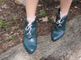
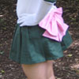
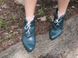
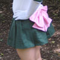

Ember Costumes
Tutorials and Resources
Sailor Scout Fuku
That sailor-top thing that makes them the sailor scouts? I'm calling it the Fuku. Here's some tips and tricks.
Next, sew the two pieces together along the outside edge with right sides face each other on the inside.
 Sailor Jupiter Hairdo with tiara
Sailor Jupiter Hairdo with tiara
 Sailor Jupiter's Shoes
 Sailor Gloves
Sailor Gloves
 Sailor Leotard
Sailor Leotard
 Sailor Fuku
Sailor Fuku
 Sailor Tiara
Sailor Tiara
 Sailor Bows
Sailor Bows
 Sailor Skirt
Back to Costume Gallery
Back to Sailor Jupiter Costume
BreakDown
Pattern
Fold your fabric in half and trace the pattern onto it. The fabric should be doubled up so that when you cut out along the lines you traced, you're cutting out two pieces which are exactly the same.Next, sew the two pieces together along the outside edge with right sides face each other on the inside.
Stripes
Measure and draw where you want the lines to go on the almost-finished fuku. Then, load up your sewing machine with white thread and set it to a wide zig-zag stitch with a stitch length of 1 or 0 depending on your machine. Make sure you test it on a piece of scrap fabric to be sure you can do it in a straight line. Sew over the lines you drew as neatly as possible.Snaps
I used snaps to attach my sailor fuku collar to the leotard. I chose to do it this way because the leotard is stretchy and the collar is not, so it is much easier to have it detachable. Plus I wanted the costume to be relatively easy to get on and off by myself.Costume Details and Tutorials
Sailor Jupiter Hairdo with tiara
 Sailor Jupiter's Shoes
Sailor Gloves
Sailor Leotard
Sailor Fuku
Sailor Tiara
Sailor Bows
 Sailor Skirt
Back to Costume Gallery
Back to Sailor Jupiter Costume